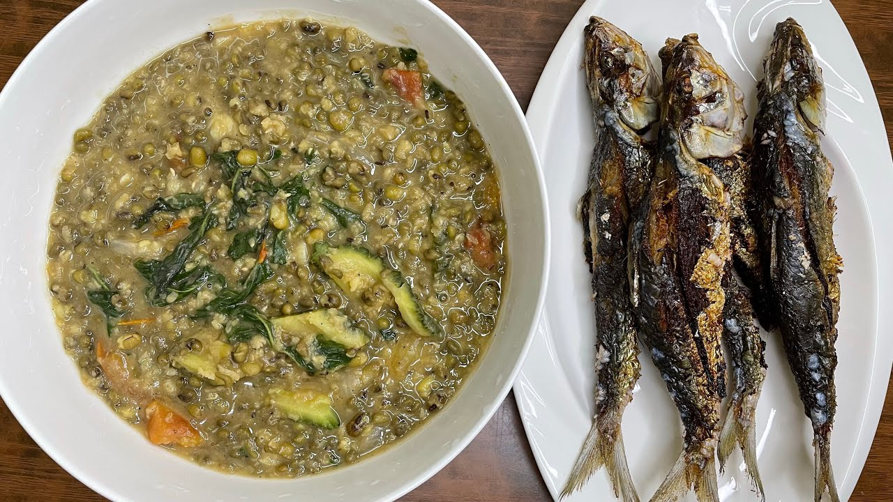

Vegetable

Ginataang Alimasag with Sitaw at Kalabasa
Prep : 4 mins | Cook : 30 mins

Ampalaya con Carne
Prep : 15 mins | Cook : 15 mins
Kinamatisang Baboy
Prep : 15 mins | Cook : 1 hr

Crispy Pata Kare Kare
Prep : 10 mins | Cook : 1 hr & 30 mins

Adobong Sitaw
Prep : 10 mins | Cook : 25 mins

Ginisang Repolyo w/ Egg
Prep : 10 mins | Cook : 20 mins

Chop Suey
Prep : 10 mins | Cook : 30 mins

Fried Eggplant
Prep : 30 mins | Cook : 10 mins
Stir Fry Eggplant
Prep : 5 mins | Cook : 20 mins

Tofu and Broccoli Stir fry
Prep : 5 mins | Cook : 18 mins

Ginisang Puso ng Saging
Prep : 30 mins | Cook : 40 mins

Garlic Tokwa and Kangkong in Oyster Sauce
Prep : 10 mins | Cook : 30 mins

Ginataang Santol
Prep : 12 mins | Cook : 35 mins
Monggo Pinakbet
Prep : 10 mins | Cook : 45 mins

Veggie Balls with Manong Sauce
Prep : 10 mins | Cook : 20 mins
Pork Monggo with Crispy Galunggong
Prep : 10 mins | Cook : 50 mins

Utan nga Langka
Prep : 10 mins | Cook : 35 mins

Ginisang Sigarilyas
Prep : 10 mins | Cook : 45 mins

Vegetable Okoy
Prep : 10 mins | Cook : 15 mins

Kilawing Labanos
Prep : 15 mins | Cook : 15 mins
Sarciadong Pechay
Prep : 5 mins | Cook : 12 mins